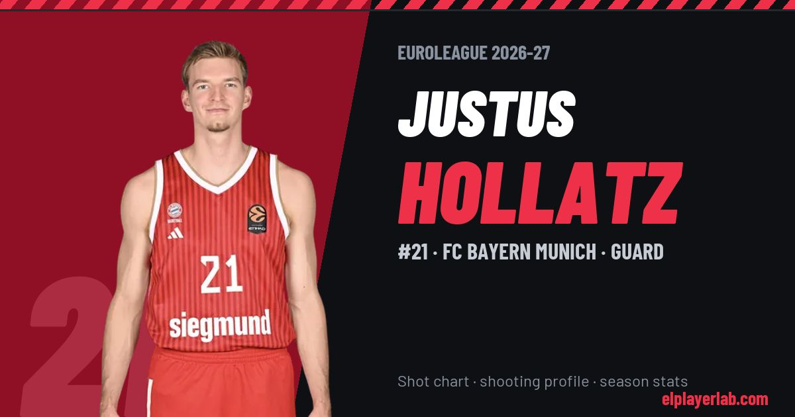

FC Bayern Munich · Euroleague 2026-27
Justus Hollatz
#21 · Guard · FC Bayern Munich · 2026-27 · 2 games · 2.0 pts · 1.0 reb · 1.5 ast a game

- Number
- 21
- Position
- Guard
- Height
- 195 cm
- Weight
- 87 kg
- Born
- 2001-04-21
- Country
- Germany
Career
- Bayern Munich 2025-2027
- Anadolu Efes 2023-2025
- Breogán 2022-2023
- Rist Wedel (loan) 2020-2021
- Hamburg Towers 2018-2022
- Rist Wedel 2017-2018
- BG Harburg Hittfeld 2015-2017
Euroleague Player Lab: shot charts, shooting profiles and season stats for every player, rebuilt after every game.